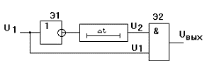
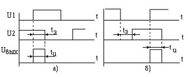
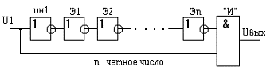
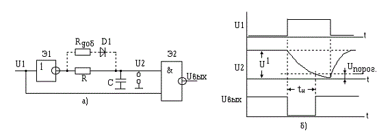
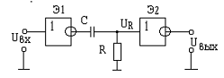
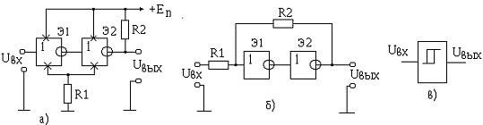
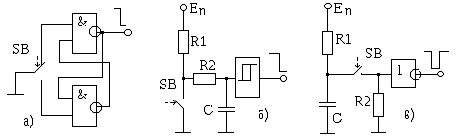

Формирователи импульсов
Формирователь коротких импульсов с применением линий задержки
Формирователь коротких импульсов формирует импульсы, длительность которых существенно меньше длительности исходных импульсов. Для построения схемы формирователя потребуются один элемент конъюнкции, один инвертор и линия задержки. Длительность выходного импульса формирователя определяется длительностью времени задержки линии задержки Δtз и средним временем распространения сигнала через инвертор tз срЭ1. На рис. 1. приведена схема формирователя, а на рис. 2 - временные диаграммы, иллюстрирующие её работу.

Рис. 1 - Формирователь коротких импульсов с линий задержки

Рис. 2 - Временные диаграммы формирователя коротких импульсов с линий задержки
Из рис. 2,а следует, что для формирования импульса от переднего фронта (исходного импульса) необходимо подавать на линию задержки инвертированный импульс. В случае формирования импульса от заднего фронта нужно инвертировать незадержанный (прямой) сигнал, т.е. сигнал, подаваемый на элемент “И” минуя линию задержки (рис. 2, б).
Использование в формирователях линий задержки не всегда оправдано экономически и из конструктивных соображений. Если не требуется формирование строго определенной длительности коротких импульсов, в формирователях в в качестве линии задержки применяются логические элементы(рис. 3).

Рис. 3 - Формирователь коротких импульсов с использованием логических элементов
Так как каждый логический элемент обладает свойством задерживать распространение сигнала, поэтому время задержки в такой схеме будет определяться числом используемых элементов логики n
Δtз = tз срЭ1 + tз срЭ2 + ... + tз срЭn = ntз срЭ,
где tз срЭ - среднее время задержки одного логического элемента.
Считается, что инвертор имеет значительно меньшее время задержки сигнала, и в качестве элементов задержки используются логические элементы с малым быстродействием.
Формирователь импульсов на элементах логики
с использованием RC-цепи.
RC цепи широко применяются в импульсной технике для формирования сигналов различной формы. RC-цепь - это цепь состоящая из сопротивления R и конденсатора С. Постоянная времени этой цепи определяется как t = RC. В зависимости от сочетания соединений RС цепь может выполнять функцию как укорачивающей, так и удлиняющей цепей. Формирователь импульса с удлиняющей RC цепью и его временные диаграммы приведены на рис. 4.

Рис. 4 - Схема формирователя импульса с удлиняющей RC-цепью (а) и его временные диаграммы (б)
Длительность выработанного формирователем импульса можно вычислить исходя из условия разряда конденсатора С. Действительно, пока конденсатор С разряжается до уровня порогового напряжения Uпор, напряжение U2 воспринимается элементом Э2 как уровень логической “1” и на его выходе поддерживается “0”. С течением времени tи напряжение на конденсаторе С становится равным Uпор и на выходе элемента Э2 появится “1”. Если считать, что напряжение до начала разряда на конденсаторе было равно напряжению уровня “1”, т.е. U1, то изменение напряжения Uс с течением времени можно представить как
отсюда имеем
Длительность импульса равна времени разряда конденсатора до порогового значения Uпор
Для ускоренного восстановления заряда конденсатора в схему может быть включен дополнительный диод D1 (рис. 4.4, а). Из-за большого обратного сопротивления диода его влияние в процесс разряда конденсатора можно не учитывать, т.е. разряд конденсатора будет осуществляться только через сопротивление R.
В тех случаях, когда требуется получить импульсы большой длительности и в схеме используется конденсатор большой емкости, последовательно с диодом включают дополнительное сопротивлени Rдоб, ограничивающее ток заряда конденсатора. Величину сопротивления R выбирают исходя из следующих условий:
во-первых, величина сопротивления R не должна превышать максимально допустимого значения, при котором на этом сопротивлении за счет обратного входного тока элемента логики может создаться напряжение, сравнимое с напряжением Uпор (для элементов ТТЛ структуры максимальное значение Rмак = 2,2 кОм);
во-вторых, минимальное значение сопротивления ограничено допустимой нагрузочной способностью логического элемента Э1 и определяется как
где
U1 - напряжение на выходе элемента Э1 в состоянии логической “1”;
n - коэффициент разветвления (нагрузочная способность) выхода логического элемента;
Iвх - входной ток одного элемента.
Номинал добавочного сопротивления имеет ограничение “снизу”, и определяется из условия
где
Uпр D1 - прямое падение напряжения на диоде D1;
I1доп - допустимый выходной ток элемента Э1 в состоянии логической “1”.
Формирователь коротких импульсов с помощью укорачивающей (дифференцирующей) RC-цепи

Рис. 5 - Схема формирователя коротких импульсов с дифференцирующей RC-цепью
Схема формирователя коротких импульсов с помощью укорачивающей (дифференцирующей) RC-цепи показана на рис. 5. Длительность выходного импульса формирователя может быть определена из соотношения
где Rвых - выходное сопротивление первого элемента формирователя.
Триггер Шмитта.
Триггер Шмитта применяется для формирования входного сигнала произвольной формы в сигналы, принимающие два стандартных уровня ”0” и “1”. Варианты схем таких формирователей показаны на рис. 6.

Рис. 6 - Схема триггеров Шмитта
На рис. 6, а показана схема триггера Шмитта, в которой применены два инвертора, входящие в серию логических транзисторно-транзисторных интегральных схем. Положительная обратная связь между инверторами обеспечивается за счет резистора R1, включенного в общую цепь питания элементов. Для увеличения влияния цепи обратной связи, ток через второй инвертор увеличен путем включения дополнительного резистора R2 между выходом Э2 и источником питания. Подобный формирователь на интегральных схемах серии К1533 удовлетворительно работает до частоты несколько мегагерц при подаче на вход синусоидального напряжения амплитудой 0,5 - 0,8 В.
В триггерах Шмитта положительную обратную связь можно ввести также путем включения резистора между выходом второго инвертора и входом первого (рис. 6, б). Входное напряжение в этом формирователе подается через дополнительный резистор R1, сопротивление которого также влияет на глубину положительной обратной связи. Увеличение сопротивления этого резистора увеличивает коэффициент положительной обратной связи и уменьшает чувствительность формирователя к входному напряжению.
На практике, в качестве формирователей импульсов, часто применяют специальные интегральные схемы формирователей (рис. 6, в). Обозначение функционального назначения таких интегральных схем содержит две буквы “ТЛ”. Например, в серии К155: это интегральные микросхемы (ИМС) К155ТЛ1, К155ТЛ2, К155ТЛ3.
Формирователь импульсов от механических контактов
При проектировании цифровых устройств часто возникает задача четкого формирования импульсов от механических контактов (при срабатывании реле, кнопок, переключателей и т.д.), так как непосредственная подача этих сигналов на входы цифровых устройств недопустима из-за “дребезга” контактов. Дребезг контактов - это явление многократного неконтролируемого замыкания и размыкания контактов в моменты их соприкосновения и расхождения. Это явление приводит к формированию пачки импульсов (вместо требуемого одиночного импульса или перепада напряжения), могущих вызвать многократное непредсказуемое срабатывание триггеров и счетчиков схемы цифрового устройства.
Существует множество вариантов построения цепей подавления импульсов дребезга контактов с помощью статического триггера, дифференцирующей и интегрирующей цепей, а также узла, обладающего свойствами интегрирующей цепи и триггера Шмитта. На рис. 7 приведены примеры схем подавления “дребезга” контактов.
Наиболее надежной и простой в схемном решении является схема подавления дребезга на статическом RC - триггере (рис. 7, а). Сигнал “0”, подаваемый с помощью переключателя к одному из входов этого триггера опрокидывает его. Причем при каждом срабатывании переключателя (кнопки) триггер реагирует на первое же замыкание соответствующей контактной пары и последующие замыкания уже не изменяют его состояние.

Рис. 7 - Схема формирователей импульсов от механических контактов
Недостатком такой схемы подавления дребезга является необходимость использования контактов на переключение, что не всегда приемлемо. В тех случаях, когда кнопка (переключатель) имеет всего одну пару контактов только на замыкание, применяются схемы, использующие постоянную времени перезаряда конденсатора.
Формирователь, показанный на рис. 7, б лишен этого недостатка. Он состоит из триггера Шмитта, на входе которого включена интегрирующая цепь (R2C). При замыкании контактов кнопки SB напряжение на входе цепи R2 C падает до нуля. Возникающее в процессе переключения кратковременные импульсы, вызванные “дребезгом”, сглаживаются интегрирующей цепью. Постоянная времени интегрирующей цепи выбирается так, чтобы амплитуда пульсаций сигнала на её выходе была меньше порога чувствительности триггера Шмитта.
Рассматриваемый формирователь может работать и без сопротивления R2 (его включают в качестве токоограничивающего сопротивления через замкнутые контакты кнопки). Благодаря малому сопротивлению замкнутых механических контактов первое же их замыкание приводит к полному разряду конденсатора. Последующие же размыкания контактов, вызванные дребезгом, практически не увеличивают напряжение на конденсаторе вследствие относительно большой постоянной времени его заряда.
Формирователь импульсов на одном инверторе (рис. 7, в) позволяет получить относительно большую постоянную времени перезаряда конденсатора при малой его емкости. При замыкании контактов кнопки конденсатор С быстро разряжается через R2. В отличие от рассмотренных выше формирователей, здесь на выходе вырабатывается импульс, длительность которого определяется постоянной времени RC цепи.
Для формирования импульсов от механических контактов можно использовать также одновибратор.
Источники
studfiles.net - Формирователи импульсов